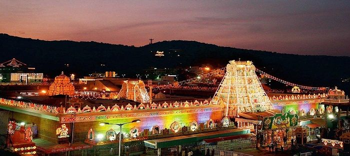

Rayalaseema (Rāyalasīma) is a geographic region in the Indian state of Andhra Pradesh. It comprises four southern districts of the state namely, Anantapur, Chittoor, Kadapa and Kurnool.As of 2011 census of India, the region with four districts had a population of 15,184,908 and covers an area of 67,526 km2 (26,072 sq mi).
The present-day region of Rayalaseema in Andhra Pradesh was officially referred to as the 'Ceded Districts' ('Datta Maṇḍalālu' in Telugu) under the British Madras Presidency, since the districts had been ceded by the Nizam of Hyderabad to the British. The local intellectuals found the name 'Datta Maṇḍalālu' to be insulting. In 1928, a strong dislike was expressed from the leaders in the Andhra Mahasabha, held at Nandyal and they sought to rename it. The region got its name as Rayalaseema with a proposal from Chilukuri Narayana Rao and was accepted.3The name Rayalaseema hearkened back to the Vijayanagara times, whose Kings used a suffix Rāya (tadbhava of Sanskrit Rājan) or Rāyalu in Telugu as their title. Thus, Rāyalasīma means 'the region or extent of Rāyalu rule'. 'Rāyalu' could also refer to Kr̥ṣṇarāya in particular.
During the British era, the Nizam of Hyderabad ceded this area to the British, and hence was called Ceded Districts. Independence, it was renamed as Rayalaseema as 'seema' was an administrative territorial entity of the Vijayanagara Empire similar to today's districts. Post independence Main articles: Andhra State and Andhra Pradesh Reorganisation Act, 2014 The four districts of the region were part of the Madras Presidency until 1953.[6] From 1953–1956, the region was a part of Andhra State and in 1956, the Telangana region was merged with Andhra State to form Andhra Pradesh State.[7] On 2 February 1970, three taluks from Kurnool i.e., Markapur, Cumbum and Giddalur were merged along with some other taluks of Nellore district and Guntur district to form Prakasam district.
In February 2014, the Andhra Pradesh Reorganisation Act, 2014 bill was passed by the Parliament of India for the formation of Telangana state comprising ten districts. Hyderabad will remain as a joint capital for 10 years for both Andhra Pradesh and Telangana.[8] The new state of Telangana came into existence on 2 June 2014 after approval from the President of India.[9] The formation of a new state named Telangana from Andhra Pradesh is not considered an amendment to the Constitution of India per article 3 and 4 of that documentRayalaseema region is located in the southern region of the state of Andhra Pradesh. The region borders the state of Tamil Nadu to the south, Karnataka to the west and Telangana to the north
Rayalaseema is rich in minerals – Asbestos, Barytes, China clay, Calcite, Dolomite, Diamonds, Green Quartz, Iron ore, Lime stone and Silica sand. It also has rich forest wealth like the rare Red sandalwood. The Rayalaseema area is prone to drought.Banglore -Chennai industrial corridor runs through Ananthapur and Chittoor districts with Chittoor,Hindupur-Penukonda,Tirupati,Sricity being major industrial attractions.
Telugu culture reached its zenith during the Vijayanagara rule under Sri Krishnadevaraya. Amongst Ashta Diggajas, Allasani Peddana, Dhoorjati, Nandi Timmana, Maadayyagari Mallana and Ayyalaraju Rama Bhadrudu are from this region. Poets like Vemana, Sri Potuluri Virabrahmendra Swami from Kadapa district played a great role in educating the common people through their literary works. It is also written by most experts (per Kandukuri Viresalingam etc.) until the 1930s that Pothana, who penned Andhra Mahabhagavatham, actually belonged to Ontimitta village of Kadapa District. Indian philosopher and spiritual teacher Jiddu Krishnamurti and Cattamanchi Ramalinga Reddy – an essayist, poet and educationist are from this region. Yogi Vemana is also a notable poet. Annamayya is from Kadapa District who got settled in Tirupati of Chittor District and composed many songs in praise of Sri Venkateshwara Swamy is of Vijayanagara period and is one of the most famous Carnatic composer in the history of Telugu Literature.
There are many notable actors in film industry such as, Chitturu Nagayya, Kadiri Venkata Reddy, Pasupuleti Kannamba, Basavaraju Venkata Padmanabha Rao, Chadalavada Kutumba Rao, Mohan Babu etc. Musicians and poets include, Annamayya, Rallapalli Anantha Krishna Sharma, Vellaala Subbamma etc.
There are many notable actors in film industry such as, Chitturu Nagayya, Kadiri Venkata Reddy, Pasupuleti Kannamba, Basavaraju Venkata Padmanabha Rao, Chadalavada Kutumba Rao, Mohan Babu etc. Musicians and poets include, Annamayya, Rallapalli Anantha Krishna Sharma, Vellaala Subbamma etc.

Gandikota is one of the oldest fort dating back to 1123. Belum Caves are the second largest cave in Indian sub-continent and the longest caves in plains of Indian Subcontinent. It is located at Belum Village of Kurnool District. Sri Lankamalleswara Wildlife Sanctuary is the only Sanctuary in the world which provides home for a bird called Jerdon's courser. Gurramkonda, Chandragiri, Horsley Hills, Kuppam and Talakona of Chittoor district.
Thimmama Marrimanu, world's largest banyan tree, covering 5.2 acres (21,000 m2) and 550 years old. It holds a Guinness record. It is situated Near Kadiri, 120 kilometres from Anantapur.[citation needed]
Rayalaseema has many important places of pilgrimage. Tirumala Venkateswara Temple, abode of Lord Venkateswara is the richest and the most visited place of worship in the world. The other being Srisailam, Ahobilam, Srikalahasti, Kanipakam, Kadiri, Rayadurgam, Penna Ahobilam, Mahanandi, Mantralayam, Puttaparthi, Yaganti, Lepakshi, Ontimitta, Bramhamgarimatham etc. Shahi Jamia Masjid in Adoni is one of the oldest constructions in South India, built around 1662 AD by Siddi Masood Khan,[13] Ameen Peer Dargah, a famous Sufi Shrine in India.
Rayalaseema Region has good number of universities, medical colleges, central premiere institutions and deemed universities.